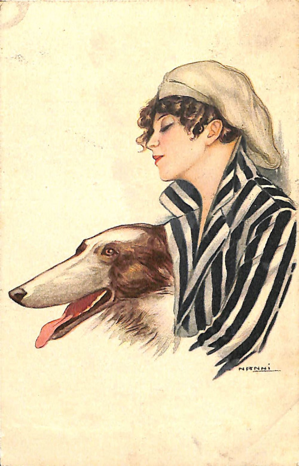

L'ora della sera
- Modena lì 6/6 1917 -
Cartolina Artistica, Italiano
Carta, 9x14
Sul retro riporta la stampa "Proprietà artistica riservata n 205"
Conservazione: Italia, La Spezia (SP), Museo Civico Etnografico "Giovanni Podenzana", Sezione dei cimeli garibaldini e della Prima Guerrra Mondiale
Numero identificativo per l'archivio: 7694_105_001/002
Persone:Giovanni "Giovannino" Coliola
Sesso: uomo
Nazionalità: italiano
Lingua: italiano
Professione: [maggiore]
Oliva Turtura
Sesso: donna
Nazionalità: italiana
Lingua: italiano
Giovanni Nanni
Sesso: uomo
Nazionalità: italiana
Professione: pittore
Fronte
Retro

Elementi stampati
clicca su un'area della cartolina
Donna con cane al fianco
Firma dell'autore del disegno, Giovanni Nanni
timbro - 8
timbro - 2
timbro - Ferrovia di Modena -7.8 7.12
timbro - Ferrovia di Modena -7.6.19.12
Francobollo Poste Italiane da 5 centesimi
Numero di serie per archiviazione: 105
Proprietà artistica riservata N° 205-6
Descrizione del fronte:
[Donna con cane]
Giovanni Nanni
1917
- Modena lì 6/6 1917 -
L'ora della sera è triste per me, l'ora
in cui l'ombra rinvade le cose, l'ani-
mo si schiude agli affetti e il ricor-
do delle care persone lontane trionfa
su tutti i sentimenti e si fa tiranno.
Perché non averti qui? Perché non
poss [orig.: ſ] iamo respirare insieme le dolcezze
di quest'ora?
Giovannino
Gent.ma Sig.na
Oliva Turtura
Via Girolamo Ros [orig.: ſ] si 58
Ravenna